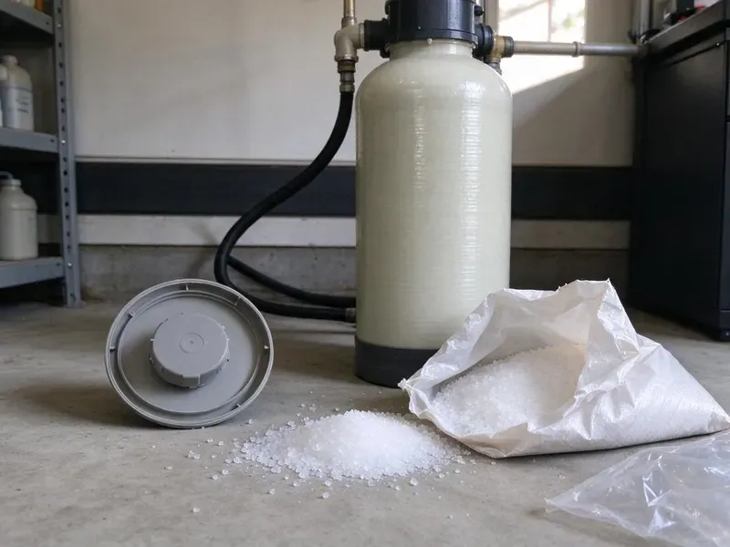
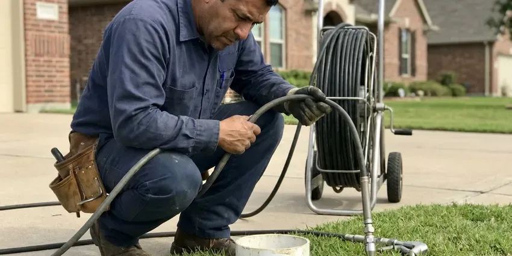

Plumbers Near Me in Essex Junction, VT
Trust CKV Plumbing to be your first-call plumbers near me in Essex Junction, VT, offering expert solutions for all your residential and commercial needs.
- Fully Stocked Service Trucks
- Local Vermont Experts
- Expert Vermont Plumbers
- Prompt, Reliable Service
Expert Plumbers On Call Today in Essex Junction, VT.
Call now and we will give you a clear arrival window and a price before any work begins.
Expert Plumbers Near Me for Essex Junction, VT Homeowners
CKV Plumbing is your local plumbing authority, offering complete services for homeowners and businesses across Essex Junction and the greater Vermont area. From leaky faucets to complex sewer line repairs, our certified plumbers use the latest tools and techniques so your plumbing system runs efficiently and dependably.
Our expertise includes:
- Water heater, softener and pressure regulator installation and repair
- Install and service water heaters, including tankless.
- Toilet, faucet, garbage disposal and fixture replacement

Additional Plumbing Maintenance Services in Essex Junction, VT
Our maintenance and specialty plumbing services in Essex Junction, VT protect your home year-round and extend the life of every system.


Customers
Why Choose CKV Plumbing for Plumbers Near Me in Essex Junction, VT?
Our team brings extensive knowledge of Vermont plumbing systems, offering solutions that stand up to local conditions and codes.
- Customer Satisfaction, Your peace of mind is our top priority, and we stand behind the quality of every plumbing service we perform.
- Transparent Pricing, We provide clear, upfront quotes before any work begins, so you know exactly what to expect without hidden fees.
- Licensed Pros, Every job is handled or overseen by a licensed Vermont plumbing contractor.
Citywide Coverage
CKV Plumbing proudly serves every neighborhood in Essex Junction, so expert plumbing help is always just a phone call away. Whether you're in the heart of downtown or the surrounding communities, our plumbers are dispatched quickly to address your needs.
Experienced Team
Our plumbing team is made up of experienced, Vermont-licensed professionals who have seen and fixed every kind of plumbing issue. They are skilled at diagnosing problems and putting in place durable solutions for homes in Essex Junction.
Safety-First Approach
We follow the plumbing code adopted in your city or county and pull permits for water heater, gas and repipe jobs when required. Every repair is tested before we go.
Trusted Certified Essex Junction Plumbing Services Professionals
At CKV Plumbing, we take pride in providing licensed, certified plumbing services throughout Essex Junction, VT. Backed by recognized industry credentials, our experienced plumbers combine technical skill with genuine customer care. Whether it is repair, installation, or maintenance, we follow strict safety and quality standards to deliver lasting results you can trust.
Call Us Now PHCC Plumbing Contractor Recognition
PHCC Plumbing Contractor Recognition Better Business Bureau (BBB) Accreditation
Better Business Bureau (BBB) Accreditation Angi Certified Pro
Angi Certified Pro ISO 9001 Quality Management Certification
ISO 9001 Quality Management CertificationFull-Service Local Plumbing Services in Essex Junction, VT
Commercial Plumbing Service in Essex Junction, VT
Restaurants, offices, salons and retail spaces need plumbing that works every day. We handle commercial water heaters, grease traps, backflow testing, restroom fixtures and drain lines. Preventive maintenance plans reduce downtime and surprise repairs. We can schedule work before or after business hours.

Water Heater Services in Essex Junction
Reliable hot water is essential, and our plumbers handle both tank and tankless water heater services. We handle everything from routine maintenance and minor repairs, such as anode rod replacement or flushing sediment buildup, to complete new installations. Whether you're upgrading to a more energy-efficient tankless model or replacing an aging conventional unit, we make sure of proper sizing and installation according to Essex Junction's plumbing codes, for steady hot water for your household.
Emergency Plumbing in Essex Junction
Plumbing emergencies don't wait for business hours. Whether it's a burst pipe, a major sewer backup, or a sudden water heater failure, our emergency plumbers in Essex Junction are available to provide rapid response and effective solutions. We understand the urgency of these situations and arrive equipped to diagnose and mitigate the problem quickly, minimizing damage and restoring peace of mind to your home or business.
Leak Detection and Pipe Repair in Essex Junction
Hidden leaks waste water and can damage drywall, cabinets and flooring. We use acoustic listening devices, thermal cameras and pressure tests to find leaks without unnecessary demolition. Repairs range from replacing a single copper fitting to rerouting a section of PEX. We also check for pinhole leaks, which are common in older copper lines exposed to aggressive water.
Drain Cleaning and Sewer Service in Essex Junction, VT
Clogged sinks, tubs and toilets are among the most common calls we take. We clear drains with cables and jetters sized to the pipe, then test for full flow. For repeat or whole-house backups, we inspect the main sewer line with a camera. We explain what caused the clog and how to prevent it.
Emergency Plumbing Services in Essex Junction
Plumbing emergencies don't wait for business hours. Whether it's a burst pipe during a cold snap or a major sewer backup, our emergency plumbers are on call 24/7 to provide rapid response. We arrive equipped with the necessary tools and parts to limit damage quickly and start repairs, preventing further costly issues for your home in Essex Junction.
Pipe Repair & Repiping in Essex Junction
Aging pipes, especially galvanized or polybutylene, can lead to frequent leaks and low water pressure. We offer full pipe repair services, from patching small leaks to full-scale repiping with durable PEX or copper. Our goal is to provide durable plumbing that stands up to Essex Junction's water conditions.

Toilet, Faucet and Fixture Repair in Essex Junction, VT
Running toilets, dripping faucets and leaky shower valves waste water and drive up your bill. We replace flappers, fill valves, cartridges and wax rings, or install new fixtures when repairs no longer make sense. Mineral buildup from hard water often wears out cartridges faster, so we carry common replacements. We can also install water-efficient fixtures that meet current standards.
Plumbers Near Me in Essex Junction, VT
When something goes wrong with your plumbing, you want help from a team that is already in your area. Our plumbers live and work around Essex Junction, so we arrive faster and know the local housing stock. That means faster diagnosis and fewer surprises.
Local plumbers also understand the permit process, inspection requirements and water conditions in your community. We keep the parts that local homes need most on our trucks. That helps us finish the job in a single visit.
CKV Plumbing at a Glance
- Fully licensed plumbing team covering Essex Junction, VT
- 24/7 emergency service with same-day scheduling
- Upfront, flat-rate pricing before work begins
- 4.8-star rated by 553+ Vermont customers
Essex Junction Map
Essex Junction Information
- Population
- 10,817
- Area codes
- Local
- Service area
- Essex Junction and communities within 40 miles
- Nearby
- Winooski, South Burlington, Burlington, Shelburne
Short summers with occasional humidity bring condensation on cold pipes in basements, which can cause drips and mold if left alone. Water quality and slab foundations can also put real strain on plumbing in Essex Junction, VT, so having a reliable local plumber on call protects your home.
Expert Services
Trust our professionals for reliable CKV Plumbing solutions in Essex Junction, VT.
Our Specialized Plumbing Services in Essex Junction, VT
At CKV Plumbing, we provide a complete range of plumbing services across Essex Junction, VT. From leak detection to full system installations, our team ensures fast, precise, and affordable service for both residential and commercial properties. Explore our core services below:


How Our Plumbers Near Me Process Works in Essex Junction, VT
Our process is designed to make booking a plumber easy and keep you in the loop at every step.
Request a Quote
Call us at (802) 209-5139 or fill out our online form to schedule an appointment. We'll gather basic information about your plumbing issue and set up a convenient time for a technician to visit your Essex Junction home.
On-Site Diagnosis
A licensed plumber will arrive at your home, conduct a thorough inspection, and pinpoint the problem. They will explain their findings clearly and discuss all available repair or replacement options.
Upfront Pricing
Before any work begins, you'll receive a detailed, transparent quote outlining the cost of the service. We believe in no surprises, so you'll know the exact price for the plumbing work in Essex Junction.
Frequently Asked Questions About Plumbers Near Me in Essex Junction
Plumbing costs in Essex Junction can vary widely depending on the type and complexity of the service. A basic service call or minor repair, like a faucet drip, might range from $150-$300. More involved jobs, such as water heater replacement or slab leak repair, can range from $800 to several thousand dollars. We provide upfront, transparent pricing after diagnosing the issue.
While minor tasks like plunging a toilet or replacing a showerhead can be DIY, most plumbing repairs are best left to licensed professionals. Incorrect repairs can lead to more significant damage, costly leaks, and code violations. For anything beyond a simple fix, it's wise to call an experienced plumber in Essex Junction so the job is done correctly and safely.
We recommend having a professional plumbing inspection every 1 to 2 years, especially for older homes in Essex Junction. Regular inspections can help identify minor issues before they become major problems, extend the lifespan of your plumbing system, and keep everything running efficiently. This proactive approach can save you money and prevent emergencies down the line.
For plumbing emergencies in Essex Junction, we work to provide the fastest possible response. Our emergency dispatch team is available 24/7, and we aim to have a skilled plumber on-site as quickly as possible, often within a few hours, to limit damage and begin repairs. Call us immediately at (802) 209-5139 for urgent situations.
Generally, if your water heater is more than 10-12 years old, frequently breaks down, or requires expensive repairs, replacement is often the more cost-effective option in the long run. Newer models are also significantly more energy-efficient. Our plumbers can assess your unit in Essex Junction and provide an straight recommendation.
Signs of a water leak include surprisingly high water bills, damp spots on walls or floors, unexplained puddles, the sound of running water when no fixtures are in use, or a musty odor. You can also check your water meter for movement when all water sources are off. If you suspect a leak, it's best to call a professional plumber to avoid more damage.
While minor clogs or drips might be DIY-friendly, most plumbing issues are best left to professionals. Attempting complex repairs without the right tools or expertise can lead to more significant damage, costly mistakes, or even safety hazards, especially with gas lines or structural plumbing. Professional plumbers have the training, tools, and experience to diagnose and fix problems correctly and safely.
Simple tasks like replacing a toilet flapper or cleaning a faucet aerator are fine for most homeowners. Gas lines, water heaters, sewer lines and anything inside walls are best handled by a licensed plumber. Mistakes can lead to leaks, code violations or safety hazards.
What People Are Saying About Our Plumbing Experts?

Emily R.
I called CKV Plumbing for plumbing repair, and the technician was fast, polite, and thorough. They explained the problem clearly and fixed it the same day. I will definitely hire them again. Highly recommended!
Plumbing Repair · Burlington, VT
James P.
Our commercial plumbing system had a leak under the sink, and CKV Plumbing handled it professionally. The plumbers arrived quickly and restored everything without disruption to our customers.
Commercial Plumbing · Burlington, VT
Daniel K.
A pipe burst at 11 pm and they actually answered. The plumber showed up within the hour, shut everything down, and had us back to normal the next morning. Could not ask for more.
Emergency Plumbing · St. Albans, VT
Laura S.
I scheduled a water heater replacement, and the team made the process smooth and affordable. The new unit works perfectly, and they cleaned up after completing the job.
Water Heater Replacement · Shelburne, VTRobert G.
The trenchless sewer replacement saved our front yard. They walked us through the camera inspection footage first so we knew exactly what we were paying for.
Sewer Line Replacement · St. Albans, VT
Mark T.
When our office needed drain cleaning, CKV Plumbing provided quick, reliable service. The plumber arrived on time and made sure every drain flowed perfectly before leaving. Very satisfied.
Drain Cleaning · St. Albans, VT